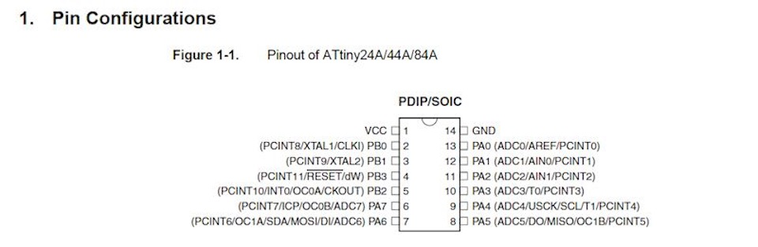

****************************************************************************************************************
ASSIGNMENT: READ A MICROCONTROLLER DATA SHEET // PROGRAM YOUR BOARD TO DO SOMETHING, WITH AS MANY DIFFERENT PROGRAMMING LANGUAGES AND PROGRAMMING ENVIRONMENTS AS POSSIBLE
PROJECT: PROGRAM THE HELLO WORLD BOARD AND EMBEDDED PROGRAM WITH FAB ISP
Soft: Mac Os Terminal
****************************************************************************************************************

-----

The Makefile is used to automate the programming
PROJECT=steadyled
SOURCES=$(PROJECT).c
MMCU=attiny44
F_CPU = 20000000
CFLAGS=-mmcu=$(MMCU) -Wall -Os -DF_CPU=$(F_CPU)
$(PROJECT).hex: $(PROJECT).out
avr-objcopy -O ihex $(PROJECT).out $(PROJECT).c.hex;\
avr-size --mcu=$(MMCU) --format=avr $(PROJECT).out
$(PROJECT).out: $(SOURCES)
avr-gcc $(CFLAGS) -I./ -o $(PROJECT).out $(SOURCES)
program-bsd: $(PROJECT).hex
avrdude -p t44 -c bsd -U flash:w:$(PROJECT).c.hex
program-dasa: $(PROJECT).hex
avrdude -p t44 -P /dev/ttyUSB0 -c dasa -U flash:w:$(PROJECT).c.hex
program-avrisp2: $(PROJECT).hex
avrdude -p t44 -P usb -c avrisp2 -U flash:w:$(PROJECT).c.hex
program-avrisp2-fuses: $(PROJECT).hex
avrdude -p t44 -P usb -c avrisp2 -U lfuse:w:0x5E:m
program-usbtiny: $(PROJECT).hex
avrdude -p t44 -P usb -c usbtiny -U flash:w:$(PROJECT).c.hex
program-usbtiny-fuses: $(PROJECT).hex
avrdude -p t44 -P usb -c usbtiny -U lfuse:w:0x5E:m
program-dragon: $(PROJECT).hex
avrdude -p t44 -P usb -c dragon_isp -U flash:w:$(PROJECT).c.hex
The file steadyled.c which is the program
#include
#include
#include
void delay_ms(uint16_t ms);
void init_io();
int button_is_pressed();
void toggle_led();
#define F_CPU 20000000UL /* 20MHz crystal oscillator */
#define BUTTON_PORT PORTA /* PORTx - register for button output */
#define BUTTON_PIN PINA /* PINx - register for button input */
#define BUTTON_BIT PA3 /* bit for button input/output */
#define LED_PORT PORTA /* PORTx - register for LED output */
#define LED_BIT PA7 /* bit for button input/output */
#define LED_DDR DDRA /* LED data direction register */
#define DEBOUNCE_TIME 25 /* time to wait while "de-bouncing" button */
#define LOCK_INPUT_TIME 250 /* time to wait after a button press */
int
main (void)
{
init_io();
while (1)
{
if (button_is_pressed())
{
toggle_led();
}
}
}
void delay_ms(uint16_t ms) {
while ( ms )
{
_delay_ms(1);
ms--;
}
}
void
init_io()
{
/* set LED pin as digital output */
LED_DDR = _BV (LED_BIT);
/* led is OFF initially (set pin high) */
LED_PORT |= _BV(LED_BIT);
/* turn on internal pull-up resistor for the switch */
BUTTON_PORT |= _BV(BUTTON_BIT);
}
int
button_is_pressed()
{
/* the button is pressed when BUTTON_BIT is clear */
if (bit_is_clear(BUTTON_PIN, BUTTON_BIT))
{
delay_ms(DEBOUNCE_TIME);
if (bit_is_clear(BUTTON_PIN, BUTTON_BIT)) return 1;
}
return 0;
}
void
toggle_led()
{
LED_PORT ^= _BV(LED_BIT);
}
Once downloaded file, I changed the number of pins where are connected the button and the LED (in the file above, pins are already modified) using the button for PA3 and PA7 for Led.
After that, I connected the FabISP and the board to the PC, and connected each other with the rainbow cable.
After connecting the two boards, open the terminal and enter the directory of the program "steadyled":
<
COMMAND : MAKE
After This modification, i can use "Make command" for compile the code
MacBook-Pro-de-Luigi-3:~ Pierluigi$ cd Downloads/steadyled
MacBook-Pro-de-Luigi-3:steadyled Pierluigi$
After that, we have to type the command "make" in order to create the excecute the Makefile. The Makefile create by default the hexadecimal file (steadyled.c.hex).
MacBook-Pro-de-Luigi-3:embedding PierluigiS make
avr-objcopy -0 ihex hello_world_blinking_by_massimo.out hello_world_blinking_by_massimo.c.hex:\
avr-size --mcu=attiny44 --format=avr hello_world_blinking_by_massimo.out
AVR Memory Usage
Device: attiny44
Program: 140 bytes (3.4% Full)
(.text + data + .bootloader)
Data: 0 bytes (0.0% Full)
(.data + .bss + .noinit)
COMMAND : MAKE PROGRAM USBTINY FUSE
Whith "Make program usbtiny command" we reset the microcontroller and prepare it to recive the "Hello Led Board" code
Finally we have to do the "make program-usbtiny" to program the board:
MacBook Pro de Luigi 3:embedding PierluigiS make program usbtiny.fuses
avr-objcopy -0 ihex helloworld_bl inking_ by mass Imo .out helloyorldblinking_bymassimo.c.hex:,
avr size mcu attiny44 -format avr hello world blinking by mass)mo.out
AVR Memory Usage
Device: attiny44
Program: 140 bytes (3.4% Full)
(.text • data .bootloaden
Data: 0 bytes (0.0% Full>
.data - .bss • .noinit)
avrdude p t44 P usb -c usbt)ny U lfuse:w:Ox5E:m
avrdude: AVR device initialized and ready to accept instructions
Reading | ################################################## | 100% 0.00s
avrdude: Device signature - 0x1e9207
avrdude: reading input file "OxSE"
avrdude: writing lfuse bytes):
Writing | ################################################## | 100% 0.00$
avrdude: 1 bytes of lfuse written
avrdude: verifying I fuse memory against OxSE:
avrdude: load data lfuse data from input file OxSE:
avrdude: input file Ox5E contains 1 bytes
avrdude: reading on chip lfuse data:
Reading | ################################################## | 100% 0.00s
avrdude: verifying ...
avrdude: 1 bytes of lfuse verified
avrdude: safemode: Fuses OK (H:FF. E:DF. L:SE)
avrdude done. Thank you.
COMMAND : MAKE PROGRAM USBTINY
Whith "Make Program Usbitiny" we upload the code
MacBook-Pro-de-Lutgl-3:embedding PierluigiS make program-usbtfny
avr-objcopy -0 thex helloworld_blinking_by_massimo.out hello_world_blinking_by_massimo.c.hex:\
avr-size --mcu=attiny44 --format=avr hello_world_blinking_by_massimo.out
AYR Memory Usage
----------------
Device: attiny44
Program: 140 bytes (3.4% Full)
(.text + data + .bootloader)
Data: 0 bytes (o.es Full)
(.data + .bss + .noinit)
avrdude -p l44 -P usb -c usbtiny -U flash:whello_world_blinking_by_massimo.c.hex
avrdude: AYR device initialized and ready to accept instructions
Reading | ################################################## | 166% 0.66s
avrdude: Device signature . 6x1e9207
avrdude: NOTE: "flash" memory has been specified, an erase cycle will be performed
To disable this feature. specify the -D option.
avrdude: erasing chip
avrdude: reading input file "helloworldblinking_by_massimo.c.hex"
avrdude: input file hello_world_blinking_by_massimo.c.hex auto detected as Intel Hex
avrdude: writing flash (140 bytes):
Writing | ################################################## | 100% 0.20s
avrdude: 140 bytes of flash written
avrdude: verifying flash memory against hello_world_blinking_by_massimo.c.hex:
avrdude: load data flash data from input file hello_world_blinking_by_massimo.c.hex:
avrdude: input file hello_world_blinking_by massimo. c.hex auto detected as Intel flex
avrdude: input file hello worldla inking by massimo.c.hex contains 140 bytes
avrdude: reading on chip Ilash data:
Reading | ################################################## | 0.27s
avrdude: verifying ...
avrdude: 140 bytes of flash verified
avrdude: salemode: Fuses OK (H:FF. E:OF. L:SE)
avrdude done. Thank you.
TEST: WOW!! IT'S WORK!!!